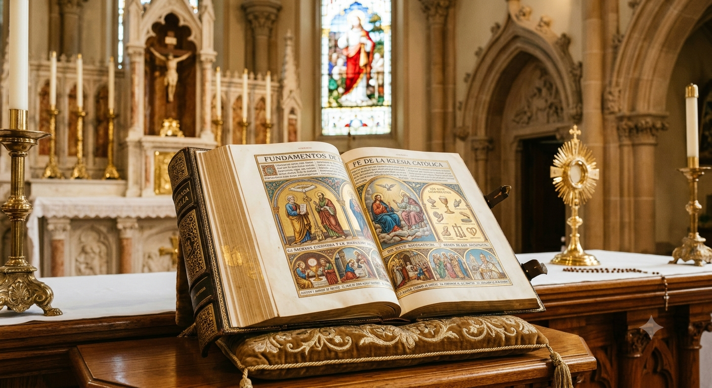
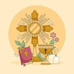

calendario de misa
| hora | lunes | martes | miercoles | jueves | viernes | sabado | dominguo |
|---|---|---|---|---|---|---|---|
| 9:30 - 11:30 | misa | ||||||
| 11:30 - 1:30 | |||||||
| 1:30 - 3:30 | |||||||
| 4:30 - 6:30 | misa | misa | misa |
Una comunidad global unida por el Evangelio, la tradición de los apóstoles y el compromiso vivo de llevar la esperanza de Cristo al mundo entero.
| hora | lunes | martes | miercoles | jueves | viernes | sabado | dominguo |
|---|---|---|---|---|---|---|---|
| 9:30 - 11:30 | misa | ||||||
| 11:30 - 1:30 | |||||||
| 1:30 - 3:30 | |||||||
| 4:30 - 6:30 | misa | misa | misa |

pascua de resurreción
La Pascua de Resurrección se celebra en iglesias, templos y hogares de todo el mundo

la navidad
La Navidad se celebra en la mayoría de los países,para celebrar el nacimiento del niño jesus

Pentecostés
Pentecostés es una fiesta universal del cristianismo (católica, ortodoxa y protestante)

La Inmaculada Concepción
Por decreto pontificio, es la fiesta patronal de Argentina, Brasil, Chile, Italia entre otros paises
la asunción de la virgen
La Asunción de la Virgen María se celebra universalmente cada 15 de agosto

corpus christi
El Corpus Christi (Cuerpo de Cristo) es una celebración de la Iglesia Católica

Una comunidad global con más de dos milenios de historia, unida por el Evangelio, la tradición apostólica y los sacramentos.

Creencia en un solo Dios en tres personas (Trinidad), el anuncio del Evangelio y el seguimiento de las enseñanzas de Jesucristo.

Siete signos visibles de la gracia divina que acompañan al fiel en su vida espiritual, desde el Bautismo hasta la Eucaristía.